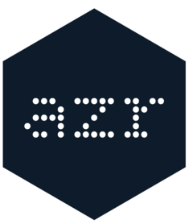

Managed identity credential authentication
Source:R/credential-managed-identity.R
ManagedIdentityCredential.RdAuthenticates using an Azure managed identity. Supports both system-assigned and user-assigned managed identities. This credential works when code is running inside an Azure environment that has a managed identity configured. No credentials need to be stored — the identity is granted by the Azure platform.
Details
The token endpoint depends on the host, which the credential detects from environment variables the platform sets, in the same order as the Azure SDKs:
| Source | Hosts | Detected by |
"app_service" | App Service, Azure Functions, Container Apps | IDENTITY_ENDPOINT and IDENTITY_HEADER |
"azure_arc" | Azure Arc-enabled servers | IDENTITY_ENDPOINT and IMDS_ENDPOINT |
"app_service_2017" | App Service (legacy API) | MSI_ENDPOINT and MSI_SECRET |
"cloud_shell" | Azure Cloud Shell | MSI_ENDPOINT alone |
"imds" | VMs, VM scale sets, Container Instances, AKS nodes | none of the above |
The Instance Metadata Service (IMDS) at
http://169.254.169.254/metadata/identity/oauth2/token is the fallback.
Service Fabric (IDENTITY_SERVER_THUMBPRINT alongside IDENTITY_ENDPOINT
and IDENTITY_HEADER) is detected but not supported: get_token() fails
with a classed error and the credential chain moves on. Azure Arc and Cloud
Shell support only the system-assigned identity.
The detected source is stored in the .msi_source field and shown by
print() and in verbose credential-chain output.
To use a system-assigned managed identity, leave
managed_identity_client_id as NULL. To use a user-assigned managed
identity, supply its client ID as managed_identity_client_id, or set the
managed_identity_client_id option (options(azr.managed_identity_client_id = ...) or AZR_MANAGED_IDENTITY_CLIENT_ID) so the credential chain in
get_token() picks it up.
A user-assigned identity is a different principal from an app registration,
so the client_id given to get_token() and friends is not forwarded to
this credential: it identifies the app registration that
ClientSecretCredential and the interactive credentials authenticate as.
Against IMDS this credential fails fast (2-second timeout) when not running inside Azure, so it is safe to include early in a credential chain.
Public fields
.msi_client_idClient ID for user-assigned managed identity, or
NULLfor system-assigned..msi_sourceToken source detected from the environment: one of
"app_service","azure_arc","app_service_2017","cloud_shell","service_fabric"or"imds".
Methods
Inherited methods
Credential$is_interactive()Credential$print()Credential$validate()
ManagedIdentityCredential$new()
Create a new managed identity credential
Usage
ManagedIdentityCredential$new(
scope = NULL,
managed_identity_client_id = opts$get("managed_identity_client_id"),
...
)Arguments
scopeA character string specifying the OAuth2 scope. Defaults to the Azure Resource Manager scope.
managed_identity_client_idA character string specifying the client ID of a user-assigned managed identity. Defaults to the
managed_identity_client_idoption; when that is unset,NULLselects the system-assigned managed identity....Accepts the deprecated
client_idargument, an alias formanaged_identity_client_id. It is taken through...so that the credential chain, which forwards only named constructor arguments, never passes an app registration's client ID here.
ManagedIdentityCredential$get_token()
Get an access token from the managed identity endpoint
Details
Returns a valid in-object cached token immediately if one exists. Otherwise requests a new token from the endpoint of the detected source (see Details above).
Returns
An httr2::oauth_token() object containing the access token
ManagedIdentityCredential$req_auth()
Add managed identity authentication to an httr2 request
Arguments
reqAn
httr2::request()object
Examples
if (FALSE) { # \dontrun{
# System-assigned managed identity
cred <- ManagedIdentityCredential$new(
scope = "https://management.azure.com/.default"
)
# User-assigned managed identity
cred <- ManagedIdentityCredential$new(
scope = "https://management.azure.com/.default",
managed_identity_client_id = "your-user-assigned-client-id"
)
token <- cred$get_token()
} # }